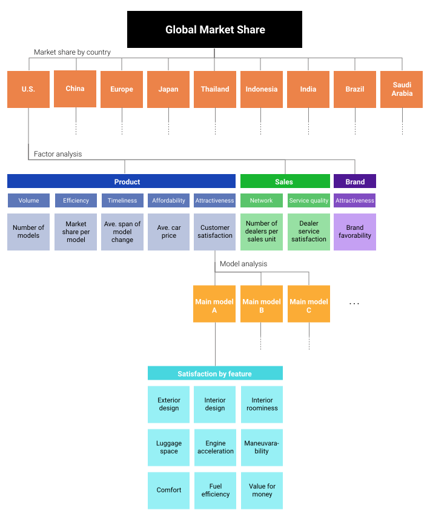
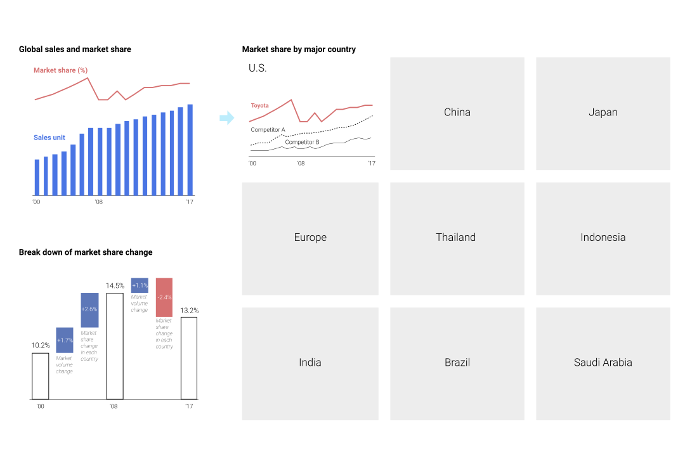
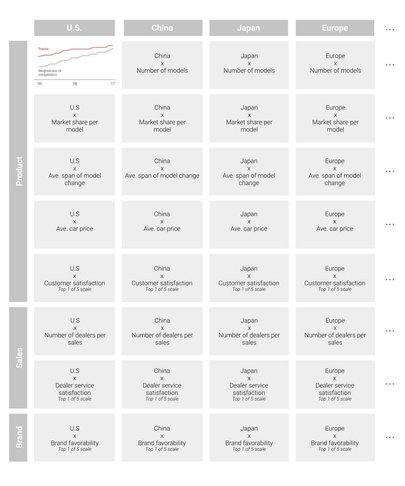
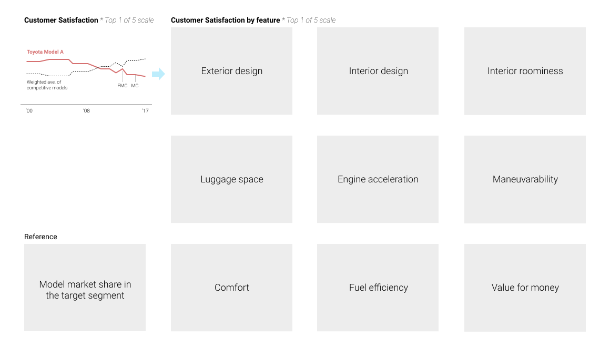

Before this project, I reported product satisfaction from customer surveys to discuss product improvement with the engineering dept., the marketing dept., and executives who were in charge of them to increase the market share.
However, it was not easy for them to agree on the data and my conclusion because they wondered that there might have been other factors which affected the market share. I had to show a whole picture around the market share to get their agreement and have constructive discussions.
Data Construction & Synthesis

First of all, I constructed a whole dataset from a big picture to details. I broke down the global market share change into that in each major country for the company to detect where problems exist.
Synthesize product, sales, and brand data to analyze the market share in each country from comprehensive and broader points of view.
Their data sources are customer surveys and subscripted data from IHS Markit, one of the famous automotive data suppliers. I processed those data to make them the best match with the purpose and context.
When the weighted average of customer satisfaction has a problem, dig it into main models and their features to grasp the problem more specifically.
Market Share
I started the dashboard from the historical global sales and market share to show a whole picture first and make it easy to understand the situation considering the market share should be evaluated in its trend as they are relative data, not abusolute. And then, I broke them into the share in each country comparing with that of major competitors.
In addition, at the left bottom, I also caluculated how the share change was caused by dividing a whole change into market volume change and market share change in each market. That helped to more clearly show the seriousness of the market share decrease in the major markets.

* All data is fake because of confidentiality
Factor Analysis
I chose a table format that the charts were aligned by country x factor to make it easy for the audience to compare them across the countries, and to increase the credibility and persuasiveness of my analysis.

* All data is fake because of confidentiality
Model Analysis
The same as the marke share page, I started from an overall satisfaction on a model, and jumped into satisfaction of each feature.

* All data is fake because of confidentiality
Result
The executives, the engineering dept., and the marketing dept. understood and agreed on the product issues. Until when I left the company, I saw them moving the discussion forward to how to improve the issues and to take marketing strategies to regain the market share.